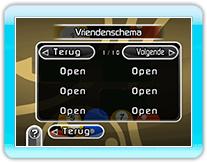
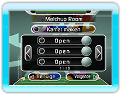
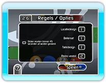

Je kunt meedoen aan een Nintendo Wi-Fi Connection Matchup door verbinding te maken met Nintendo
Wi-Fi Connection. Als je een verbinding maakt via Nintendo Wi-Fi Connection, kies je het type matchup dat je wilt spelen in het spelmenu. Je kunt kiezen uit een wedstrijd voor 2 of 4 spelers.
● Opmerkingen over Nintendo Wi-Fi Connection Matchups
Als je op  drukt, wordt het pauzemenu niet weergegeven.
Als je op
drukt, wordt het pauzemenu niet weergegeven.
Als je op  drukt, wordt het HOME-menu niet weergegeven.
drukt, wordt het HOME-menu niet weergegeven.
● Vriendencodes en vriendenschema
Je kunt pas een matchup met een vriend spelen als deze is geregistreerd in je vriendenschema. Geef je vrienden de vriendencode die wordt weergegeven op het vriendenschemascherm, zodat ze je kunnen registreren. Je kunt tevens vriendencodes uit je vriendenschema verwijderen. Je kunt niet met vrienden spelen als je hun vriendencodes hebt verwijderd uit je vriendenschema.

● Tegen vrienden spelen
Je kunt een matchup met een vriend spelen als deze is geregistreerd in je vriendenschema.
Je kunt niet tegen een vriend van je vriendenschema spelen als zijn Nintendo Wi-Fi-verbinding is verbroken, of als je vriendencode uit zijn vriendenschema is verwijderd.
● Internationale matchups spelen
Je kunt tegen spelers overal ter wereld spelen. De tegenstander wordt automatisch geselecteerd.

● Regels
Je kunt de spelregels tijdens Nintendo Wi-Fi Connection Matchups niet wijzigen.
Er is tevens een tijdslimiet voor elke beurt.
Als je niet binnen de tijdslimiet stoot, bega je een overtreding en gaat de besturing naar de volgende speler.